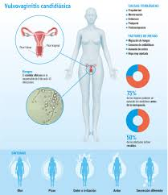

Candidiasis Vaginal

Descripción
Una infección por hongos vaginales es una infección micótica que provoca irritación, flujo e intensa picazón en la vagina y la vulva, los tejidos que se encuentran en la apertura vaginal.
Causas
Las causas pueden incluir:
- Uso de antibióticos, que provoca un desequilibrio en la flora vaginal natural.
- Embarazo.
- Diabetes no controlada.
- Sistema inmunitario deteriorado.
- Consumo de anticonceptivos orales o terapia hormonal que aumenta los niveles de estrógeno.
Síntomas
Los síntomas de la candidiasis vaginal pueden ser de leves a moderados e incluyen:
- Picazón e irritación de la vagina y la vulva.
- Sensación de ardor, especialmente durante las relaciones sexuales o al orinar.
- Enrojecimiento o inflamación de la vulva.
- Dolores y molestias vaginales.
- Sarpullido vaginal.
- Secreción vaginal espesa, blanca y sin olor, con aspecto similar al queso cottage.
- Secreción vaginal acuosa.
Pruebas y exámenes
Se realiza un examen pélvico y se toma una muestra de las secreciones vaginales.
Artículos Relacionados
Para buscar información en Google, haga clic en el siguiente enlace:
Artículo sobre Candidiasis VaginalVideos Relacionados
Video sobre Candidiasis Vaginal:
Para volver a la página principal pulsa aquí.